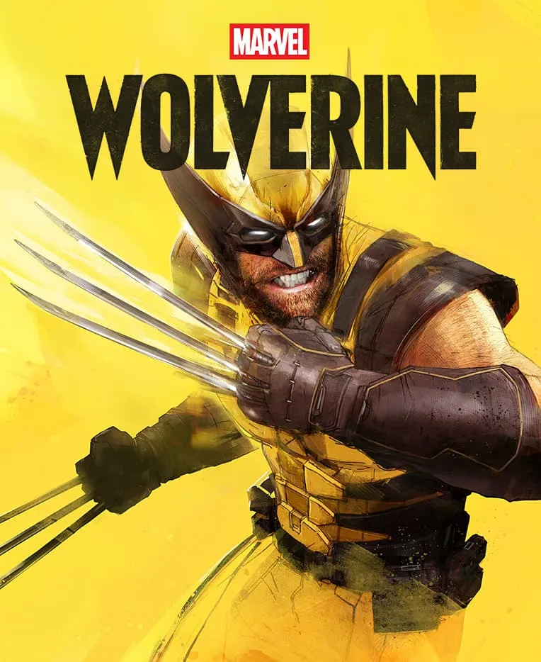
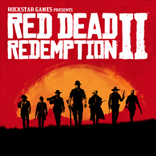

Our featured games:

Genre: Action-Adventure, Open World
Developer: Rockstar Games
Release Date: 19 November 2026
Platforms: PlayStation 5 and Xbox Series X|S
Expected Rating: 18+ (Mature)
Grand Theft Auto VI is Rockstar Games' next-generation open-world game set in the fictional state of Leonida.
It features a massive world, improved graphics, realistic gameplay, and a story centered around two main protagonists.
🎥 Watch the official GTA VI trailers below:
🎬 Watch GTA VI Trailer 1🛒 Pre-orders: Official pre-orders have not started yet. Check Rockstar Games for the latest updates.
Visit the Official GTA VI WebsiteGenre: Action-Adventure
Developer: Insomniac Games
Publisher: Sony Interactive Entertainment
Release Date: September 15, 2026
Platforms: PlayStation 5
Expected Rating: Mature (17+)
Marvel's Wolverine is an upcoming action-adventure game developed by Insomniac Games, the creators of Marvel's Spider-Man.

🎬 Click the button below to watch the official reveal trailer.
🎬 Watch Official Wolverine Reveal Trailer🌐 Visit the official PlayStation page for the latest news and updates.
Visit Official Marvel's Wolverine WebsiteGenre: Action-Adventure
Developer: Rockstar Games
Release Date: 26 October 2018
Platforms: PlayStation 4, Xbox One, Windows
Metacritic Rating: 97/100
Red Dead Redemption 2 is one of the highest-rated games ever made.
You play as Arthur Morgan, an outlaw trying to survive in the fading Wild West while making difficult moral choices.

🎬 Click below to watch the official trailer.
Watch Official RDR2 TrailerGenre: Action-Adventure
Developer: Santa Monica Studio
Release Date: 9 November 2022
Platforms: PlayStation 4, PlayStation 5, Windows
Metacritic Rating: 94/100
God of War Ragnarök follows Kratos and Atreus on their epic journey through the Nine Realms as they prepare for the legendary battle of Ragnarök.
The game features stunning visuals, emotional storytelling, and intense combat.

🎬 Click below to watch the official trailer.
Watch Official God of War Ragnarök Trailer